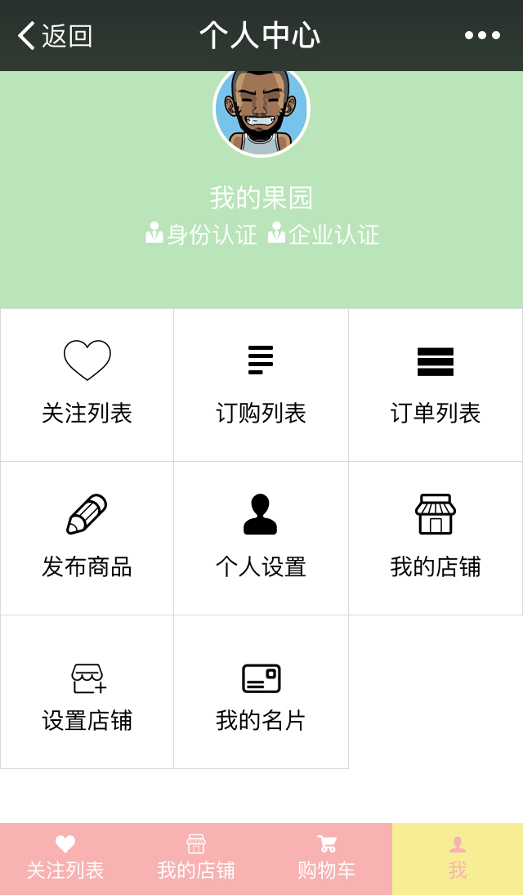

我做的项目
山东大学深圳研究院官网
网站请戳
独立完成的第 1 个上线的项目！公司有一套 Java 开发的建站系统，前端以组件的方式开发页面模版，后端负责渲染数据并生成页面，属于传统的 BS 架构开发模式。要适配 IE7+。
这个项目从开发、到最后的实施上线，都是我负责的。最终发现，开发是项目流程中最简单的一个环节。
使用 gulp 构建，Sass 编写 CSS , Jade (Pug ) 编写 HTML, 简单的 Jquery。
React 第一个项目
demo 请戳
原码请戳
第一次用使用 React 开发的项目。虽然开发过程十分曲折，并且代码和结构都很不好，但是经过了这个项目，进一步的理解了 react 的理念。也进一步喜欢上了 React，它可以使我的思维更加有条理。
这个项目也是第一真正的与后端对接代码，虽然第一次对接的过程也不是很顺利，但是充分的了解到了与后端共同制定 API 的重要性以及 mock 的重要性。
使用 webpack 打包构建，React + React-router, Sass 编写 CSS , Jquery。

React 第二个项目
原码请戳
这个项目是比较简单的项目，相对于第一个 React 来说更得心应手了。
在这个项目上努力使自己的代码更加规范，整洁，结构更加的合理，并且尽量使性能更优。将组件更细分，储存在 state 里的变量尽量减少，利用 PureComponent 减少不必要的 Mount 等等。
为了改善用户体验，加入 Loading 和 无限滚动加载等小组件。
使用 webpack 打包构建，React + React-router, 原生 JS + ES6, 用 superagent-mock mock 数据 ,__Sass 编写 CSS

我是在做完第一个 React 项目后，开始首次尝试 Vue.js 的。这次是跟一个比较有经验的前端工程师合作写的。但是其实我是以学习为主，所以最终我也没有写多少行，但是我认真的读了他的代码 ( 环境配置没太看, 其实是没太看懂 …)。
学到很多，首先，我知道了比较正规的大公司的前端开发的正规的流程是什么。其次，这个项目给我真实的展示了怎么样划分组件。也学到了一个项目大概的内容规划。还有这个项目也是用了 mock server，更加坚定了我之后一个项目使用 mock server 的想法。当然最基础的还是如何使用 Vue 写一个简单的项目。
原码请戳

设计并实现页面。
产品主要针对移动端用户 ( 尤其微信 )。
使用 weui, Css , 后期加入 gulp 构建, 最终实现静态页面。
这是在公司做的第一个项目，最难的部分就是要自己设计页面。参考了很多网站，网站也实现了一大部分，但是最终也是 达不到满意的效果。新来了设计师后就不再开发这个版本了。
是开发的第二个版本的产品，与设计师和另一名前端程序员合作开发。
相对于上一个版本来说，有了专业的设计师开发更加愉快～
项目依旧需要适配基本的手机端。
基本上纯静态页面，加入了少量的 Jquery。
使用 gulp 构建， Sass__ 编写 CSS , 加入少量 weui 实现的。